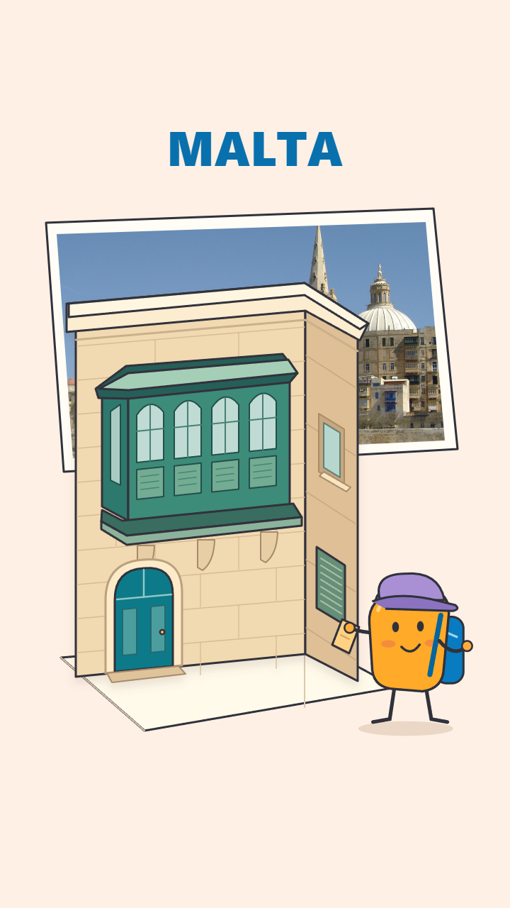
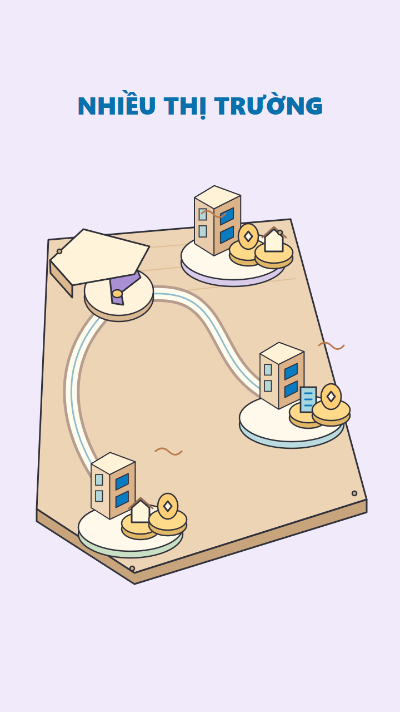

S01 · Cuốn sách thành điểm tựa
0.000–6.019s trong voice gốc · 6.019s
Việc học mở ra một kế hoạch dài hạn của gia đình, không chỉ một kỳ học.
Source HTML · Scene packetStoryboard 14 cảnh / voice gốc 75,16s. Ba pilot dưới đây là trích đoạn độc lập; chưa dựng full. Chờ duyệt ý tưởng và phong cách.
Storyboard toàn phim · Hướng dẫn duyệt · Bàn giao Antigravity

Đã duyệt hình tĩnh. Chuyển động S05 chưa được dựng/duyệt. Các MP4 bên dưới là pilot ban đầu để đối chiếu.

Đã duyệt hình tĩnh. Chuyển động sửa S09 chưa được dựng/duyệt.
Mở S05 + S09 motion r1 có voice gốc
Đã render theo hai frame duyệt; motion mới chờ duyệt. Các MP4 bên dưới là bản ban đầu.
0.000–6.019s trong voice gốc · 6.019s
Việc học mở ra một kế hoạch dài hạn của gia đình, không chỉ một kỳ học.
Source HTML · Scene packet18.151–23.858s trong voice gốc · 5.706s
Malta là một địa điểm được đưa vào cân nhắc đa dạng hóa, không thay thế toàn bộ tài sản cũ.
Source HTML · Scene packet39.800–47.251s trong voice gốc · 7.451s
Đa dạng hóa là phân bổ mức tiếp xúc, không phải bảo đảm lợi nhuận hoặc xóa rủi ro.
Source HTML · Scene packetCập nhật: chủ nội dung đã xác minh text “3.8 tỷ” cho S10. Giữ voice gốc; storyboard và pilot vẫn đang chờ duyệt.